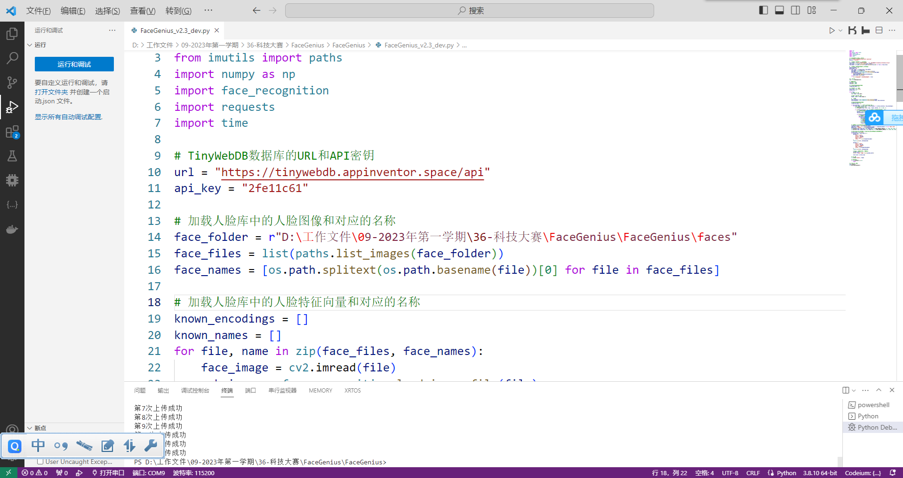
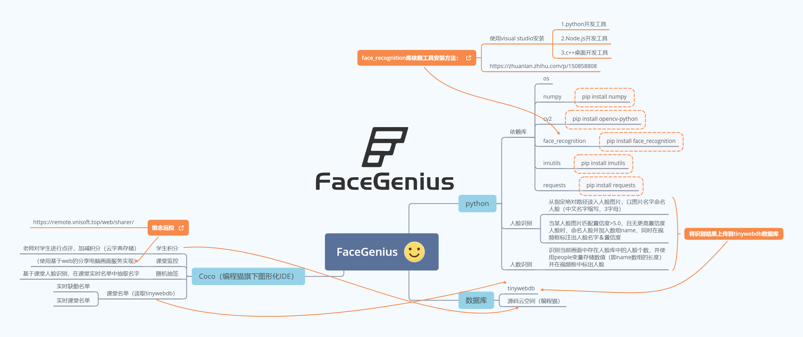
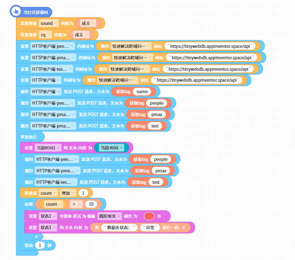

更新于
Ctx
一个编程蒟蒻
FaceGenius:基于人脸识别的智慧课堂管理系统
写在前面的话
本篇博文的主角——FaceGenius，这应该是我人生中第一个比较正式且完成度较高的创客作品🎉
我也将这个项目的所有代码开源放在了Gitee上: https://gitee.com/chengtx007/FaceGenius
作为我人生中第一个正式完成的创客作品，代码冗余且只是勉强能跑（哭
我也将完整的项目论文放在了Readme里，感兴趣的可以前往查看（真的会有人看嘛？
摘要
本项目主要设计了一种基于人脸识别的智慧课堂管理系统，该系统采用模块化设计，通过使用TinyWebDB数据库存储数据、cnn、cocoapp框架构建前端界面，并利用Opencv和face_recognition模型构建了后台。使其能够实现课堂人数的自动统计、学生的实时监控、课堂名单的自动生成以及随机抽签等功能。
关键词：人脸识别，智慧课堂，管理系统
一、绪论
背景、意义与目的
随着人工智能技术的发展，人脸识别技术已经被广泛应用于各个领域。在教育领域，人脸识别技术也被应用于课堂管理中。目前，国内外已经有一些基于人脸识别的课堂管理系统，还有一些研究团队尝试将人脸识别技术应用于课堂行为分析中，以实现对学生课堂行为的自动评估。但是，这些系统通常只实现了部分功能，且性能不够稳定。未来的发展趋势是结合人工智能技术和大数据技术，实现更加智能化和个性化的课堂管理。
主要研究内容
主要研究内容是融合现有的信息化手段，设计并实现一种基于人脸识别的智慧课堂管理系统。其功能包括：
（1）课堂人数的自动统计；
（2）学生的实时监控；
（3）课堂名单的自动生成；
（4）随机抽签。
二、方案选型与需求分析过程
系统的方案设计与选型
在最开始，我需要确定我的具体需求和功能，再根据功能确定技术难点和要点，根据技术来寻找各类方案，最终选择最适合的方案。我通过调查研究和分析，我确定了以下需求：
在经过讨论之后，确定了一下具体技术要求：
人脸识别技术的选型
人脸识别有多种技术可以使用，经过资料搜索，我找到了以下几种方式：
（1）利用百度api接口进行识别
（2）自己写一个CNN神经网络
（3）使用opencv2自带的face_recognition模型
经过探索之后，决定采用第三种方式，简单直接高效。
数据存储技术的选型
数据库的选型同样有很多种，我探索了以下几种方案：
（1）编程猫自带的db
（2）谷歌推出的TinyWebDB
（3）Json文件存储
（4）传统sql数据库
其中第一种限制过多，第三种则只能存放在本地，第四种难度较高，因此，在本项目中我选择第三种——TinyWebDB作为数据存储的方式。
客户端框架的选型
客户端的呈现有多种方式，如H5、APP、PC软件等，实现方式也多种多样，在与指导老师讨论之后，我决定采用coco推出的app制作方式，这种制作出来的客户端美观，制作过程也相对简单。
后台框架的选型
在后台框架方面，因为我选择了python版本的opencv2，因此也采用了python语言作为后台的编程，因为业务较为简单，因此直接使用requests来与数据库和客户端通讯。
三、系统总体设计
智慧课堂管理系统采用基于人脸识别的方案，通过摄像头捕捉人脸图像，使用人脸识别算法进行比对和分析，实现课堂人数的自动统计、学生的实时监控、课堂名单的自动生成以及随机抽签等功能，整体程序设计框架如下图：
人脸识别模块
人脸识别技术是一种基于人脸图像的身份识别技术，通过对人脸图像的比对和分析，实现对人脸的识别。在智慧课堂管理系统中，我使用人脸识别技术来实现课堂人数的自动统计和学生的实时监控。采用OpenCV库和face_recognition库来实现人脸识别功能。具体实现过程如下：
（1）首先读取摄像头数据；
（2）使用Opencv2配合face_recognitio对人脸检测图像进行人脸检测，获取人脸的位置和大小；
（3）之后对检测到的人脸进行比对和分析，判断人脸的身份。
课堂人数统计模块
利用人脸识别模块进一步扩展，我构建了课堂人数统计模块，其包括以下功能：
（1）检测进入和离开教室的人数；
（2）实时更新教室内的人数
（3）能够将人数统计数据存储在数据库中；
（4）提供人数统计结果。
实时监控模块的设计
我利用“轻松传”网页的H5的方式来设计该模块，通过在H5显示视频，然后利用客户端调用该H5页面，这有一些取巧，但是效果并不差。
随机抽签模块
另外，为了方便对课堂进行扩展，我采用随机数生成算法和名单管理算法来实现随机抽签功能。具体实现过程如下：
（1）获取名单：从现有的已经到达的学生中获取课堂名单；
（2）随机生成一个数字，然后根据随机数选择名单中的学生
四、总结
本次我设计并实现了一种基于人脸识别的智慧课堂管理系统，该系统能够实现课堂人数的自动统计、学生的实时监控、课堂名单的自动生成以及随机抽签等功能。经过半年的努力，基本完成功能实现，希望我的研究成果能够为智慧课堂管理提供一定的参考和借鉴。